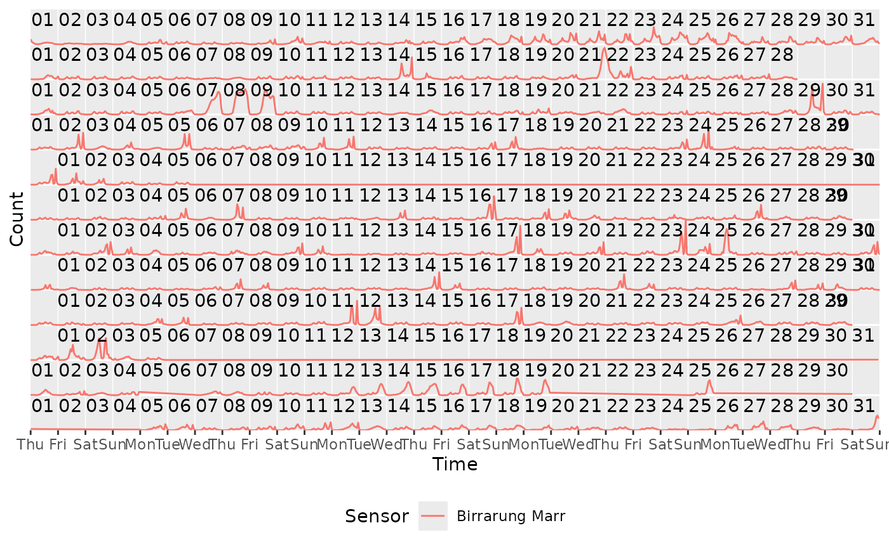

Arranges time series data into a calendar-like layout of rows and columns.
Data is cut into loops as in coord_loop(), with each loop becoming its
own row and column of a grid rather than being overlaid.
coord_calendar(
cells = day(1L),
rows = week(1L),
blocks = NULL,
panes = month(1L),
cols = quarter(1L),
pane_spacing = 0.25,
col_spacing = 0.1,
cell_ratio = NULL,
label_cells = "{cyc(day, month)}",
label_rows = NULL,
label_blocks = NULL,
label_panes = "{cyc(month, year, label = TRUE, abbreviate = TRUE)}",
label_cols = NULL,
time = "x",
xlim = NULL,
ylim = NULL,
expand = FALSE,
default = FALSE,
clip = "on",
coord = coord_cartesian()
)Size of a calendar cell (see the Granule hierarchy section); governs the cell labels and the only gridline drawn along the time axis.
NULL: no cells, no gridlines, no cell labels
a granule or duration, e.g. mixtime::days(1L)
Defaults to day(1L).
Size of a calendar row: coord_loop()'s time_loops under a
calendar-specific name.
NULL: a single row spanning the whole column
a granule or duration, e.g. mixtime::days(7L)
Defaults to week(1L), or day(7L) if the calendar has no week.
Size of a calendar block: rows are grouped and marked with a thicker gridline where each block starts.
NULL (default): no blocks
a granule or duration, e.g. mixtime::months(1L)
Size of a calendar pane: rows are grouped and set apart by a
gap rather than a rule. Must be coarser than rows, no coarser than
cols.
NULL: no panes
a granule or duration, e.g. mixtime::months(1L)
Defaults to month(1L), silently dropped if it doesn't fit.
Size of a calendar column, arranged left to right with no wrapping.
NULL: a single column spanning the whole time range
a granule or duration, e.g. mixtime::quarters(1L)
Defaults to quarter(1L), or month(3L) if the calendar has no
quarter.
Gap between panes of rows / between columns, as a fraction of one row's height / one column's width.
Aspect ratio of a calendar cell, as its height divided
by its width, in the manner of ggplot2::coord_fixed() but applied to a
cell rather than to the data units of the axes.
NULL (default): the panel takes whatever shape it is given
a number, e.g. 1 for the square cells of a printed calendar
Fixing a cell fixes the panel's own aspect ratio, so this cannot be
combined with a coord that sets its own ratio, and
theme(aspect.ratio = ) overrides it. Applies to a whole row's tile
when there are no cells to divide it.
How to label each instance of a granule:
a mixtime format string, as time_labels of scale_x_mixtime(),
e.g. "{cyc(day, month)}" (a bare "{day}" is not valid)
a function of the granule's times, returning a character vector
NULL (default except for label_cells/label_panes): no labels
Named by the time each instance starts, except a block or pane (which spans several rows), named by the time in the middle of the group.
A string specifying which aesthetic contains the time variable that
should be looped over. Default is "x".
Limits for the x and y axes. NULL means use the default limits.
Logical indicating whether to expand the coordinate limits.
Default is FALSE.
Logical indicating whether this is the default coordinate system.
Default is FALSE.
Should drawing be clipped to the extent of the plot panel?
A setting of "on" (the default) means yes, and a setting of "off" means no.
The underlying coordinate system to use. Default is coord_cartesian().
Useful for visualizing long time spans with events over short intervals,
such as holidays. Cuts the time axis at every calendar boundary at once,
folds each piece into its row's window, and offsets it into its cell of
the grid. As with coord_loop(), geometries crossing a boundary are cut,
justified per align_discrete (see scale_x_mixtime()).
cells/rows/blocks/panes/cols each accept:
NULL
a duration, e.g. mixtime::days(1L)
a time granule, e.g. mixtime::cal_gregorian$month(1L)
a bare expression, e.g. day(1L) or month(1L), naming a granule of
whichever calendar the time axis resolves to (from the scale's common
chronon, or the Gregorian calendar for a plain Date/POSIXct axis)
Granules sit in a strict hierarchy: col, pane, block, row, cell.
A granule never straddles a boundary of anything above it; a row cut
short by a coarser boundary is left blank for the rest of its width, as
on a printed calendar.
The time axis is broken at every cells boundary and labelled as a
position within the rows cycle (e.g. "Mon", "Tue", ...), unless
breaks/labels/time_breaks/time_labels are set explicitly (see
scale_x_mixtime()). Falls back to the scale's own breaks when cells
or rows is NULL, cells can't cut the axis, or a row holds too many
cells to name individually.
Each granule has its own theme elements, ggtime.calendar.<granule>.line,
.background and .text (<granule> = cell, row, block, pane or
col), inheriting from panel.grid, panel.background and text. The
panel's own grid is not drawn; the cell granule rules the time axis
instead.
+ theme(
ggtime.calendar.block.line = element_line(linewidth = 1, linetype = "22"),
ggtime.calendar.cell.line = element_blank()
)A granule's labels are justified within the granule they belong to, each in a different default corner so several can be labelled at once without colliding.
library(ggplot2)
library(mixtime)
#>
#> Attaching package: ‘mixtime’
#> The following objects are masked from ‘package:base’:
#>
#> date, months, quarters
# Hourly pedestrian counts in Melbourne, as mixtime time points.
pedestrian <- dplyr::mutate(tsibble::pedestrian, Time = datetime(Date_Time))
# A monthly calendar arrangement of pedestrian counts, showing the high
# activity at Birrarung Marr during the Australian Open in late January.
pedestrian_2015 <- dplyr::filter(
pedestrian,
mixtime::year(Time) == mixtime::year(2015),
Sensor == "Birrarung Marr"
)
ggplot(pedestrian_2015, aes(x = Time, y = Count, color = Sensor)) +
geom_line() +
coord_calendar(rows = month(1L), cols = NULL) +
scale_x_mixtime(
time_breaks = mixtime::days(1L),
time_labels = "{cyc(day, cal_isoweek$week, label = TRUE, abbreviate = TRUE)}"
) +
theme(
legend.position = "bottom",
axis.text.y = element_blank(), axis.ticks.y = element_blank()
)
